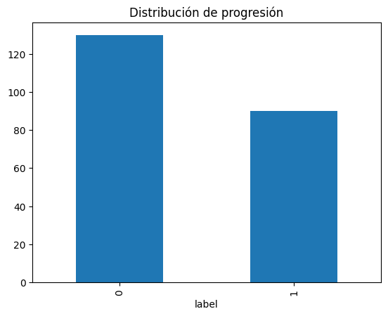

# IMPUTACIÓNdf_dx = out.copy()# DIAGNÓSTIVCO# -------------------------------df_dx = df_dx.sort_values(["sujeto_id", "Visit"])mapping_order = {"CN": 0, "MCI": 1, "Dementia": 2}df_dx["DX_num"] = df_dx["DX"].map(mapping_order)sujetos_sin_dx = ( df_dx.groupby("sujeto_id")["DX"] .apply(lambda x: x.isna().all()))df_dx.loc[df_dx["sujeto_id"].isin(sujetos_sin_dx[sujetos_sin_dx].index), "DX_num"] = mapping_order["MCI"]df_dx["DX_num"] = df_dx.groupby("sujeto_id")["DX_num"].ffill()df_dx["DX_num"] = df_dx.groupby("sujeto_id")["DX_num"].bfill()reverse_mapping = {v: k for k, v in mapping_order.items()}df_dx["DX_imputed"] = df_dx["DX_num"].map(reverse_mapping)df_dx = df_dx.drop(columns=["DX_num"])# NIVEL EDUCATIVO# -------------------------------mediana_global = df_dx["PTEDUCAT"].median()mediana_sujeto = df_dx.groupby("sujeto_id")["PTEDUCAT"].transform("median")# 3. Asignar:# - si el sujeto tiene medianas válidas, usarla# - si el sujeto no tiene ningún dato, usar la mediana globaldf_dx["PTEDUCAT_imputed"] = mediana_sujeto.fillna(mediana_sujeto)df_dx["Educat"] = mediana_sujeto.fillna(mediana_global)# SEXO - VISITA - TARFET# -------------------------------df_dx["Sexo"] = df_dx["Sex"].map({"M":0, "F":1})df_dx["Visita"] = df_dx['Visit'].str.extract(r'(\d+)').astype(int)map_dx = { "MCI":0, "Dementia":1}df_dx["is_dementia"] = df_dx["DX_imputed"].map(map_dx)# LABEL de progresionlabel_por_sujeto = ( df_dx .sort_values(['sujeto_id', 'Visita']) .groupby('sujeto_id')['is_dementia'] .apply(lambda x: 1if (x.diff() ==1).any() or (x.iloc[0] ==1) else0))df_dx['label'] = df_dx['sujeto_id'].map(label_por_sujeto)
Normalización de BioMarcadores
Code
# VARIABLE VOLUMÉTRICAScognitivas = ["APOE4", #APOE4 es una variante genética de la apolipoproteína E"CDRSB", #"Suma de cajas del Clinical Dementia Rating (CDR); mide la severidad de la demencia.","MMSE", #"Mini-Mental State Examination; evaluación global del estado cognitivo (máx. 30 puntos).","ADAS13", #"Alzheimer’s Disease Assessment Scale – 13 ítems; mide deterioro cognitivo en Alzheimer.","FAQ", #"Functional Activities Questionnaire; evalúa la capacidad funcional en actividades diarias.","RAVLT_immediate", # "Puntuación inmediata en la prueba verbal de aprendizaje (Rey Auditory Verbal Learning Test).","RAVLT_learning", # "Puntuación de aprendizaje acumulado en RAVLT; mide retención verbal.","RAVLT_forgetting", # "Índice de olvido en RAVLT; diferencia entre aprendizaje y recuerdo tardío.","DIGITSCOR", #"Digit Span Score; mide memoria de trabajo y atención mediante secuencias numéricas.","TRABSCOR", # "Trail Making Test B Score; evalúa función ejecutiva y flexibilidad cognitiva.",]volumen = ["Ventricles", # "Volumen de los ventrículos cerebrales; puede indicar atrofia cerebral.","Hippocampus", # "Volumen del hipocampo; clave en memoria y afectado en Alzheimer.","WholeBrain", # "Volumen total del cerebro; útil para evaluar atrofia global.","Entorhinal", # "Volumen de la corteza entorrinal; región afectada tempranamente en Alzheimer.","Fusiform", #"Volumen del giro fusiforme; relacionado con reconocimiento visual.","MidTemp", # "Volumen del lóbulo temporal medio; implicado en memoria y procesamiento auditivo.","ICV", #"Volumen intracraneal total; usado para normalizar medidas volumétricas."]
Code
# NORMALIZARdef imputar_y_normalizar(df, variables, nombre_grupo):print('-'*50)# Filtrar solo variables numéricas válidas variables_num = [v for v in variables if v in df.columns and df[v].dtype.kind in"iufc"]print(f"Variables numéricas para imputación ({nombre_grupo}):\n{variables_num}")# Subset de datos datos = df[variables_num].copy()# Imputación multivariada# Modelo bayesiano iterativo para predecir valores faltantes en función de las demás variables. imputer = IterativeImputer(random_state=42, max_iter=20, sample_posterior=True) datos_imputados = imputer.fit_transform(datos)# Convertir a DataFrame imputado df_imputado = pd.DataFrame(datos_imputados, columns=variables_num, index=df.index)# Reemplazar en el DataFrame originalfor v in variables_num: df[v] = df_imputado[v]print("✅ Imputación completada.")# Normalización z-score scaler = StandardScaler() df_std = pd.DataFrame( scaler.fit_transform(df[variables_num]), columns=[v +"_std"for v in variables_num], index=df.index )# Concatenar al DataFrame original df = pd.concat([df, df_std], axis=1)return dfprint('Imputación')df_dx = imputar_y_normalizar(df_dx, cognitivas, "cognitivas")df_dx = imputar_y_normalizar(df_dx, volumen, "volumen")
# [] Balance de clasesprint("\n Distribución de la variable objetivo:")display(df_tab["label"].value_counts(normalize=True).mul(100).round(2).to_frame())df_tab["label"].value_counts().plot(kind="bar", title="Distribución de progresión")# [Test] Z-test para comparar proporcionescounts = [df_tab["label"].value_counts()[1], df_tab["label"].value_counts()[0]]nobs = [sum(counts), sum(counts)]stat, pval = proportions_ztest(counts, nobs)print(f"\nPrueba Z-test: Z = {stat:.2f}, p-value = {pval:.4f}")
Distribución de la variable objetivo:
proportion
label
0
59.09
1
40.91
Prueba Z-test: Z = -3.81, p-value = 0.0001

2.3Estandarización de las imágenes
Las imágenes fueron procesadas siguiendo un pipeline estandarizado orientado a:
Reorientación al sistema anatómico RAS.
Resampleo a una resolución isotrópica de 1.0 mm.
Redimensionamiento a un shape uniforme de 160×192×192 voxeles.
Normalización de intensidades mediante Z‐score.
Exportación a formato NumPy (.npy) para uso en modelos 3D.
Code
# Medidas más comunesdisplay(out['orientation'].value_counts().to_frame())display(out['shape'].value_counts().to_frame().head(3))display(out['voxel_size'].value_counts().to_frame().head(3))
count
orientation
(R, A, S)
192
(P, S, R)
28
count
shape
(166, 256, 256)
79
(160, 192, 192)
77
(180, 256, 256)
25
count
voxel_size
(1.2, 0.9375, 0.9375)
97
(1.2, 1.25, 1.25)
75
(0.9375, 0.9375, 1.2)
27
Code
import shutildef preprocess_mri_folder( BASE_DIR = Path(r"C:\Users\usuario\MRI\IMAGES_NII"), output_folder=r"C:\Users\usuario\MRI\IMAGES_npy", target_shape=(160,192,192), target_spacing=(1.0,1.0,1.0) ):if os.path.exists(output_folder):print("🧹 Limpiando carpeta de salida...") shutil.rmtree(output_folder) os.makedirs(output_folder, exist_ok=True)# Encuentra TODOS los .nii y .nii.gz dentro de todas las carpetas nii_files =list(BASE_DIR.rglob("*.nii")) +list(BASE_DIR.rglob("*.nii.gz"))print(f"Total imágenes encontradas: {len(nii_files)}")for fname in tqdm(nii_files, desc="Procesando MRI", unit="img"):#print(f"\nProcesando: {fname}")# ----------------------# 1) Cargar imagen y orientar a RAS# ---------------------- img = sitk.ReadImage(os.path.join(BASE_DIR, fname)) img = sitk.DICOMOrient(img, "RAS")# ----------------------# 2) Resamplear a voxel 1.0 mm# ---------------------- original_spacing = img.GetSpacing() original_size = img.GetSize() new_size = [int(round(original_size[i] * (original_spacing[i] / target_spacing[i])))for i inrange(3) ] resampler = sitk.ResampleImageFilter() resampler.SetInterpolator(sitk.sitkLinear) resampler.SetOutputSpacing(target_spacing) resampler.SetSize(new_size) resampler.SetOutputDirection(img.GetDirection()) resampler.SetOutputOrigin(img.GetOrigin()) img_resampled = resampler.Execute(img)# Convertir a numpy arr = sitk.GetArrayFromImage(img_resampled) # (D,H,W)# ----------------------# 3) Ajustar tamaño a (160,192,192)# — Crop o pad automático# ----------------------def resize_to_shape(volume, target): out = np.zeros(target, dtype=volume.dtype)# cálculo de offsets d, h, w = volume.shape td, th, tw = target# límites d0 =max((td - d)//2, 0); d1 = d0 +min(d, td) h0 =max((th - h)//2, 0); h1 = h0 +min(h, th) w0 =max((tw - w)//2, 0); w1 = w0 +min(w, tw) vd0 =max((d - td)//2, 0); vd1 = vd0 +min(d, td) vh0 =max((h - th)//2, 0); vh1 = vh0 +min(h, th) vw0 =max((w - tw)//2, 0); vw1 = vw0 +min(w, tw) out[d0:d1, h0:h1, w0:w1] = volume[vd0:vd1, vh0:vh1, vw0:vw1]return out arr = resize_to_shape(arr, target_shape)# ----------------------# 4) Normalizar intensidad (z-score)# ---------------------- arr = arr.astype(np.float32) m = np.mean(arr) s = np.std(arr) +1e-6 arr = (arr - m) / s# ----------------------# 5) Guardar como .npy# ---------------------- subject_id = fname.parents[3].name image_id = fname.parents[0].name out_name =f"{subject_id}_{image_id}.npy" out_path = os.path.join(output_folder, out_name) np.save(out_path, arr)#print(f"✔ Guardado: {out_path}")print("\n🎉 Procesamiento completado.")# Ejecutarpreprocess_mri_folder()
🧹 Limpiando carpeta de salida...
Total imágenes encontradas: 220